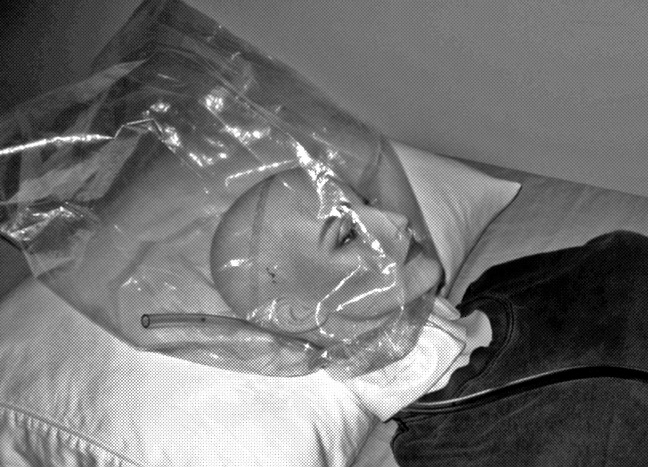

Lighter Than Air
E.D (Eating Daddy)
Mar 22 2023
“The room is normally yellow in the daytime but the night is black and no color can escape from this place despite the city’s best attempts to bleed light into this world. We remain untouched here, in the darkness we remain pure. Outside the window, past blackout curtains and tinted glass there is a billboard that reads ‘your ad here’ which refuses to leave me alone, and although its message is apropos it is too obvious and cliche for anyone to comment on so we remain silent and let it watch in peace”. This is how I have heard stories begin, some brief descriptions, the more poetic, novel, or ominous the better often followed by a character’s thoughts and an introduction to the world and its interiority. It all feels so clear and important before you actually write it down. In thought, everything is fresh, uncorrupted, and vast before it’s communicated. The act somehow brings the infinite down to the limit, to the cliche, the pretentious, the sincere, and the embarrassing. The piece is due tomorrow, the electronic turn-in date is set for a minute before class and I have all night and all morning to finish. I am so hungry, I am always so hungry, but I have to save room for tomorrow and I cannot eat. A creative writing exercise with no prompt, the only requirement is that it’s over two thousand words. Why do they do this to us? Why am I so hungry? I want to talk about how hungry I am, I want to use it as some thinly veiled metaphor for something else. Maybe I’ll also use the word thin or skinny to describe things along with whatever other synonyms the online thesaurus provides. It will make everyone uncomfortable but no one will say anything. What is there to say? Most if not all the students and teachers know I had an eating disorder, they will think the words are some kind of psychological leak that they will feel all so satisfied for having noticed. I will say all of this in this piece, call attention to itself and break out of the mundane trite uninspired shit everyone else reads in class. It’ll be like when someone asks you how you are doing and how offputting it is to be thrown out of the dialogue tree when an answer other than “I’m fine” or “I’m doing well” leaves the throat of the answerer. I will explain this, I will tell everyone how they already know this, how it’s just a custom, not a real question, how everything is a performance and how everyone knows this, and how this too is part of the act and how you know this as well and how knowing how cliche it all is, is all part of the game from keeping you from doing anything different. But you already know, everyone knows yet we feel uniquely significant for figuring this out despite everyone knowing that everyone knows. You know these thoughts and these words are just teenage angst, they are dismissible, they will pass in a few years and you will be embarrassed for having felt these things to mean anything other than fluxes of hormones, misplaced feelings, and or juvenile naivety. I check my word count, I read what I have written, and I begin to delete. It is going to be a long night.
I am 16, and at my third funeral since high school began. Sally Mead, also sixteen, pretty, but not as pretty as me, popular, more popular than me but only by a little and only because she tried harder, good grades, worse than mine, and either addicted to or on the verge of being addicted to a cocktail of both uppers (Adderall, Riddilin (how do you even get Riddilin nowadays) and Vybans) as well as a similar generic list of downers to counteract the stimulants or maybe just to feel numb for a while. It was all standard stuff like Xanax and its various substitutes that neither of her parents was willing to get her a prescription for. Besides getting her ‘meds’ second hand she was by all accounts normal, better than normal, excelling even, and besides wanting to be a psychologist when she grew up she showed no obvious signs of depression or suicidal tendencies. She once told me over lunch that the guidance counselor said she had “serious potential”. Not just potential but “serious potential”, she said making sure to emphasize the serious part so I understood. And yet here I stand in a crowd of black clothing surrounded by classmates and what I assume are family members watching silently as they lower poor dead Sally six feet below. The day is wet and I can feel the grass wilting, dying beneath my feet as a religious figure who I think is a priest recites lines that apparently priests still say during times like this and everyone just stands and pretends to consider the words. As he speaks about forgiveness, one of the girls behind me who I’m pretty sure also sits in front of me in chemistry whispers to ask if everyone who commits suicide goes to hell. I do not hear a reply.
After the funeral, they have what I can only describe as an all-you-can-eat buffet that only caters to those dressed in black and I have to try and suppress laughter as I watch a group of high schoolers and extended family members try and eat fried chicken as somberly as possible. All of them seem unsure if it’s appropriate to comment on the quality of the food and their enjoyment of it. Thankfully they decide against it. As I stare awkwardly unsure of what to do except to avoid the food Sydney Latner approaches me and can’t help but ask if I “know how she did it”? “It was a suicide bag”, she tells me with too much excitement in her voice causing me to lower my eyes and look around just enough to make sure she gets the message to talk more quietly. Apparently, poor Sally had managed to get a hold of a canister of helium and used one of her parent’s scuba masks to pump in the gas. Sydney explains that she had some giant plastic bag taped around her head as well that was used to cut off her oxygen supply while simultaneously allowing the mask to connect to the tank of gas. The brother found her with it along with a computer open to various suicide forums that apparently documented and informed people on the optimal ways to exit early. On the site, the device was referred to as an ‘exit mask’. Apparently, the forum explained how helium is lighter than air, and that its lack of density prevents the negative feelings of asphyxiation and stress that make self-suffocation so difficult causing the user to experience a rather peaceful death. She asks me if I knew something could be lighter than air but nothing comes out of my mouth and all I can hear in my head is a small voice telling me that “the lighter you are the less you suffer”.
Three weeks after the funeral my mom left. I can no longer remember what her face looks like and I wonder if I have face blindness since suppression seems too obvious. I spend a lot of time looking in the mirror now trying to remember how I look, turning away and quizzing myself on specific details about my features, how many freckles I have on the left side of my face, the exact curvature of my nose, anything about my cheekbones which I am unable to describe in words but I think look nice. I can successfully remember none of these things no matter how hard I try or how many times I repeat the questions to myself. I have lost five pounds since the funeral. My dad thinks it’s because of his marital problems. I can hear him calling me down for dinner, I am so hungry. I look back towards the mirror. I think he made pasta. He calls my name again. I don’t respond.
I do not cut, and besides the standard-issue teenage eating disorder, I try and stay away from all the other high school cliches that so many of my peers fall victim to. I tell myself that I am different as I look at the plastic grocery bag from Vons and think of poor dead Sally Mead. I can still hear my father calling me down for dinner as I lie down on the bed and place the plastic over my head. “Time for dinner”, he yells as I pull the bag tighter around my head but making sure not to pull to much on the bag so as to avoid tears while attempting to minimize the amount of air I let in. With each inhalation, I feel the bag move slightly into my mouth. I close my eyes and can already feel my chest getting tighter and my body enter into that primal flight or fight panic where your hands naturally ball up into fists and you have the useless urge to squirm and wiggle. I keep count in my head timing myself to see how long I can last. I cna see in the mirror the plastic outline of my features as I try to suck in for whatever if any oxygen still remains. I imagine I can taste the increase in carbon monoxide and try to convince my body to let me go another couple of seconds, “It’s time for dinner”.
I am seventeen and crossing the street to meet with my three coworkers/friends for brunch in Santa Monica. “There’s the man eater.” one of them says mockingly as I approach. Some girls get called bitches or sluts but I am ‘man eater’. It used to be princess or prude since I consider myself a virgin and my demeanor came off as more conservative and reserved compared to the other girls I work with but ever since I told them about having to fight off my last boyfriend by biting off a piece of his ear when he went totally psycho on me I have been bestowed the title of “man eater” instead which although seemingly better than slut or bitch the uniqueness of it compared to the standard pejoratives assigned to my coworkers is somewhat off-putting and I am unsure how to feel about it. “Did you just get off?” I say to Michelle who looks tired and keeps her eyes closed for an abnormal amount of time when she blinks. “It’s like Damien always says, you get off when he does”. The girls laugh and I smile as I take a seat. I look around the street as I settle into my chair and order a virgin cocktail. Another one of the billboards has followed me here but this one has been changed so that the “you’re ad here” has been defaced and the word ad crossed around so now the sign just reads ‘your here”.
The conversation is the same as it always is, the usual talk about the clients from the night before, what everyone is going to do when they ‘get out of the game’, who is working tonight, and of course my favorite topic: what they found in the client’s wallet. It’s a tradition in our group to always go through the buyer’s wallet, not to steal, Damien pays them enough but going through a man’s wallet is like going through a woman's purse, there is much to discover for those who have eyes to see. The girls approach the conversation like it’s a boring contractually obligated discussion, but since my clients are somewhat different than the other girls and have no need to bring a wallet this topic has always interested me since I have never had their experience. There is never anything special in the wallets nor do they really expect to find anything and today’s story is no different. What Bridgette found is what most find in the wallet and what I always found to be the most interesting, the ever-incriminating photo of the daughter (it’s almost always a daughter) who looks exactly like whichever one of the girls at the table he paid for. Sometimes it’s an older wife who resembles whichever girl he paid for but almost without fail it’s a daughter. Amber calls it Freudian and everyone at the table nods their head in agreement until Casey describes the phenomena as “ I don’t know I think it’s kind of sweet” which puts a pause on the conversation and everyone just sits silently for a second debating on whether or not to shame her or show concern at the comment until Ashley breaks the pause and begins laughing. I need to get out of this place. I sit quietly and sip my drink, stare at the billboard, and let the sound of this city wash over me. ‘Your ad here’.
When I was a little kid I asked my mom what made someone crazy. She told me that the only difference between them and us was that crazy people never think they are crazy. Ever since then I have repeated different versions of the mantra “I know I am crazy and therefore I am not” in order to protect myself from insanity while gradually updating the prayer as I grew older and the apparent paradoxes and contradictions became more obvious to me. The problem was not with my mother’s philosophy but with the words themselves. The mantra works in the opposite way something like the Jesus prayer is supposed to. As you internalize and repeat the words its conclusion becomes more apparent and you no longer become immunized to the disease, the blanket of its protective powers slowly fades as your confidence in its abilities grows and you become certain that you really aren’t crazy which forces you to continuously add more and more astricts addendums and parentheses to the chorus. “I know I am crazy therefore I am not crazy *(my knowledge of this does not mean that I am not crazy (*knowing that I know I am not crazy for knowing that knowing that I am not crazy for knowing that I am crazy does not mean that I am not crazy) etc…”. It was only years later in middle school when someone told me the definition of insanity was to expect different results from doing the same thing over and over again which I found unconvincing and inapplicable to my particular problem. Insanity is not repetitive it is recursive, it is the set of all sets that are not members of themselves. The problem is not one of psychology but of logic, madness is not a product of the mind but a fault in logic itself, it is pure paradox. This problem has been put off in set theory, but there is little hope for a resolution to be reached in madness.
I repeat parts of the prayer to myself as I walk down the long carpeted floor of the hotel. “I know I am crazy and therefore…” but I can’t stop thinking about the pictures in the wallets. Part of me wants to believe that there is something incestuous about the clients as horrible as that is to think because the other part of my mind believes the alternative is somehow worse. Why do they always leave the wallet in plain view unprotected? Why is it that they always leave us alone with it when they go to use the restroom before the night’s festivities? What is it in them that wants us to see? I fear that maybe the picture is the excuse. You looked like my wife when she was younger, or you look like my daughter. If this was their fetish why do none of them ask us to play along, why is it they want us to see their excuse for infidelity or at least hope we see it unless there wasn’t something darker they hoped to protect themselves from by revealing this lie? Why do they act like they fear our judgment? Who are they trying to convince us or them? Maybe that’s why I have the role that I do for Damien and that’s why Ashley and the rest of the girls have theirs, it’s why in my own special way I consider myself a virgin although many would call me something worse. “Man eater”. I know I am crazy.
You can always tell how nice a place is by how well the security is dressed. The exception to this is if the security is invisible, not nonexistent but not visible although when they become visible they are almost always without fail still wearing suits. These places with invisible security are the most prestigious since you are always being protected by the closest thing to God you can find in southern California. Some type of panoptic security force is always present because they are never around. This place is particularly nice, I have counted 5 chandeliers since my arrival, with no visible security and no patterns in the ceiling which is disappointing since I take pleasure in the meditative act of counting the squares or diamonds in the patterned surfaces before arriving at the client’s doorway. Another reason I enjoy the patterns is it helps distract my body as I struggle to carry the heavy suitcase I’m required to take with me to jobs. The ‘toys’ as Damien calls them are far too heavy and it causes me to take frequent breaks in the hallway if the room is too far away. Thankfully the contents of the case are not for me and hopefully, they never will be as I am just the operator, not the patient. The men are usually nice, well-mannered, and surprisingly more attractive than I initially expected when I first got into this business. This somehow makes it worse and more difficult. Why do they need me? The attractive ones scare me the most as my services are not cheap and I wonder what drives a person like that to pay for the services I offer. It may be the most basic fundamental urge but there are cheaper more fulfilling ways to take off. I know I am crazy and therefore I am not… I knock on the door, “you’re here” a voice says from within the dark room.
There was more blood than usual tonight, maybe I am doing something wrong, or maybe I’m just now noticing the sheer quantity of it all as the novelty of the job wears off and I can focus more on the details. Besides my worry that I made more of a mess than was necessary, the night went relatively smoothly although my jaw still feels locked/sore and the foul taste is still in my mouth, and even worse I cannot get the Weezer song “Buddy Holly” out of my head. One of the main occupational hazards of the industry is working with older men who select music to play in the background when you enter so they seem more ‘hip’ and younger than they really are. For some reason, Weezer is the most common band they like to use for this purpose followed by Kings of Leon, Arctic Monkeys, and Hozier. Why am I still so hungry, I am somehow always more hungry after a job despite all I had to swallow. I am nowhere near home but I can somehow hear my father calling me down for dinner. What excuse will it be tonight? I try to eat at least one meal with him a week, but it’s becoming more and more common for me to avoid this duty. Maybe tomorrow I’ll try and make an effort. The key to not eating while looking like you are is to spread your food out on the plate. It always looks like you at least had something if the food is mashed with utensils and moved around out of piles. The other tried and true trick is spitting into a napkin and I have developed a magician-like skill to make the food disappear from my mouth only to have it reappear into the cloth in my lap while the audience is none the wiser. It is best to perform this trick once talk to your father about dating prospects or use a word that is easily associated with sexual innuendos so he is unable to look at you. He barely looks at me anymore anyway. The last time we spoke he told me I look thin. I always appreciate his compliments.
I am eighteen and I am finally under one hundred pounds. It is two weeks before the first day of college. Thanks to my work, I have saved up enough for all four years including room and board. It’s not that my family couldn’t afford college but asking my father for money after my mom left seemed like an impossible task. I doubt he has any idea I am even going or that I graduated. I wonder what he made for us tonight? I haven’t worked a job for Damien since high school ended and I can’t explain why today of all days I decided to answer his call. I keep having the same reoccurring nightmare of looking out my dorm window and finding that the billboard has followed me away from the city. I wish that all dreams would die. I wish I really was here.
I am inside Damien’s office which is really just a condo but it sounds more professional and less sleazy if I call it an office. Damien is on a call, probably Daisy because I can hear the voice on the other end crying and he is being very gentle trying to console her. Daisy was always his favorite girl and there are unsubstantiated rumors that the two are in a mutually exclusive relationship, business aside of course. It’s hard not to dip your pen in company ink but it’s different when you work in a pen factory and I suspect every girl besides me in the ‘company’ have dipped and been dipped in corporate ink. Damien hangs up the phone and smiles at me the way all men smile at pretty women who work for them. “Long time no see”, he says taking a seat behind his desk. “You’re looking skinny love”. “You said you had a big job”, he looks at his nails very femininely as I say this. “I thought you had all the money you needed”. “Couldn’t hurt to have a little spending money. One last job before summer ends”. “Isn’t that what the cops in movies always say when they end up dying in the end? You know either that or how many days they have left until retirement.” “I just want some spending money D”. He smiles that wicked smile. He picks up a manilla envelope from his desk and stands up. “You’re going to like this one” he smirks handing it to me. Damien isn’t normally like this. “He asked for you by name”. He watches my face as I open the folder, giddy like a middle school girl. Somewhere in the distance, I can hear my father calling me down for dinner. “How does one discover they can do what you do?” he asks me. When I open the folder to look at the client I can understand his sick pleasure in handing it to me. I once read that some parents in the Soviet Union were so hungry that they ate their own children. I don’t think that type of hunger ever goes away, I think that type of hunger stays with a girl and I think the children who don’t get eaten, the ones who survive grow up knowing the same taste their parents did. I think hunger can only grow.
One last job, just when I thought I was out they pull me back in, one last day until retirement, you're here, I know I am crazy. This is what I tell myself as I walk down the hallways waiting to meet my final client. The weight of the luggage feels heavier tonight and although the ceiling has the geometric patterns I typically love to count and focus on tonight I concentrate solely on my body; feeling the bones rattle with every step focusing on the air on my skin the artificial climate inside this place, the feeling of my foot against shoe against the carpet. “Your here'” I repeat out loud unafraid to look crazy because I know I am crazy and for the first time in a while, I am uncertain if this guarantees that I am not. Room 777, I knock twice, and count to see how long it takes for him to open the door. One, two, three, fou—. One last job.
The room is cold, maybe because it’s actually cold or maybe because that’s how I think it should be. It feels more appropriate if it’s chilly, it fits the mood and gives it some type of ambiance in my head that makes it feel more meaningful or at least more like a movie which makes the whole situation more bearable in my mind. The man refuses to greet me when I step into the room. He says nothing, as he lets me in and quickly takes a seat in that awkward middle part that all large hotel rooms possess, that sort of liminal space between the bedroom and the rest of the world. I lay my suitcase on the floor and smile at him, but he refuses to look at me opting instead to stare out into the window. Of course, it’s there it’s always there, ‘your here’, only now the nightmare has been corrected and the advertisement is back to being an ad and is no longer a reminder. The lack of conversation makes me feel uneasy so I look towards the bedroom trying to kill time, some clients take a minute to settle in so instead of forcing conversation I begin searching for the wallet that has always alluded me but I can’t find it. There is no excuse to be made for what is going to happen. I can’t take waiting any longer and I want this to finish as quickly as possible so I take the initiative and ask him if he is ready to begin. “Most clients like to use the restroom first or talk a little before-” “I’m ready now”, he says still refusing to look at me. I smile politely and nod. I get on my knees and enter the combination which clicks open the expensive suitcase. From here my old routine comes back to me and my next couple of moves feel natural. I do not know how many jobs I have performed like this but I am thankful that he is my last, he had to be. I take the large thick plastic covering out of the case and begin splaying it over the floor making sure to fold it ensuring nothing from tonight seeps through the surface. He continues staring out the window while I set the stage, he acts like I’m not here. “Are you sure you don’t want to talk”? The question gets no response.
The procedure begins by first preparing what Damien calls “the utensils” which are really just various knives and a small portable axe. The hazmat suit is the next thing that needs to be set up or rather warn in order to protect the clothes and body from the inevitable mess that is to come. It is both protective and allows for an exit to be made in normal clothing without the blood raising any alarms. Once the outfit is on the only thing left is to set up a camera, why it must be filmed and the tape and camera returned to Damien I still do not know. Possibly for video evidence to show future clients we follow through on our promises long after they are unable to verify it, possibly blackmail, or maybe he just likes to watch. “I’m going to start the recording now”, I say trying to sound sweet yet professional. I pick up the knife and tell him to get undressed. He turns from the window and finally meets my eyes with a smile, “I saw you got into college”. He grabs my hand, the first time my father has touched me since my mother left. “You look so thin”.
With each chunk of flesh, I tore and consumed from my father the voices in my head grew faint and there was no one to tell me ‘your here’ or that I know that I am crazy and memories of my mother began to return. When the night was over and only bones remained I rose from the floor and cleaned myself in the shower. I broke down the skeleton placing pieces into the suitcase which would be returned to Damien along with the recording first thing in the morning. I take my time with all of this treating it like a ritual, trying to tell myself to remember, remember this, remember the taste and the smell, the blood and bones. When I get back to the house I no longer felt the hunger that once so strongly possessed me. I saw the billboard was taken down and there were only a few days until class started. I look into the mirror and see what a beautiful woman I had become. I smiled at the reflection and very carefully as if I was scared someone was listening gently whisper, “dinner is ready”.